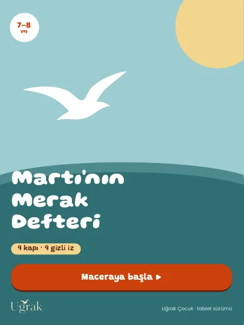
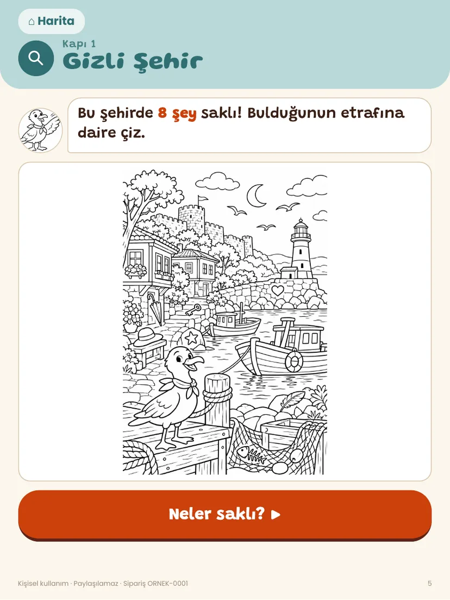
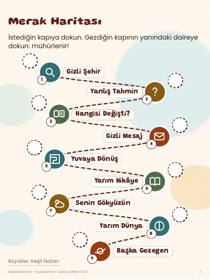

Tablet + telefon sürümü · 7–8 yaş
Martı'nın Merak Defteri
Rüzgâr Martı'nın merak izlerini dokuz kapının ardına savurdu. Gizli şehir, yanlış tahmin, fark bulma, şifreli mesaj, labirent, yarım hikâye ve serbest çizim. Telefon sürümünde kutulara dokununca işaretlenir, haritaya mühür basılır; puan ve yarış yok.
- Biçim PDF · tablet + telefon
- Kullanım Dokun, işaretle, parmakla çiz; istersen yazdır
- Fiyat 149 TL